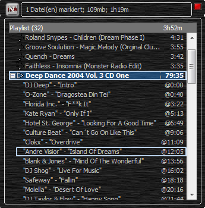

|
Cuesheets
|
Nemp unterstützt Cuesheets. Das sind kleine Dateien mit
Sprungmarken für eine lange Audiodatei. Cuesheets kommen
häufig bei Non-Stop-Mixen zum Einsatz, um eine unterbrechungsfreie
Wiedergabe zu garantieren und trotzdem einzelne Titel anwählen zu
können.
Eine Cuesheet Datei könnte so aussehen:
PERFORMER "VA"
TITLE "Deep Dance 2004 Vol. 3"
FILE "01_VA_-_Deep_Dance_2004_Vol._3_CD_One-MOD.mp3" MP3
TRACK 01 AUDIO
TITLE "Intro"
PERFORMER "DJ Deep"
INDEX 01 00:00:00
TRACK 02 AUDIO
TITLE "Dragostea Din Tei"
PERFORMER "O-Zone"
INDEX 00 00:40:31
INDEX 01 00:40:32
TRACK 03 AUDIO
TITLE "F**k It"
PERFORMER "Florida Inc."
INDEX 00 03:21:42
INDEX 01 03:21:43
(usw...)
Wenn zu einer mp3-Datei "mein-langes-Lied.mp3" eine gleichbenannte
"mein-langes-Lied.cue" existiert, wird diese Datei automatisch
ausgewertet. In der Playlist erscheint dann vor dem langen Titel ein
[+], worüber Sie die einzelnen Einträge des Cuesheets ein-
und ausklappen können. Die Positionen der Titel in der Datei
werden dann mit "@<zeit>" gekennzeichnet.
